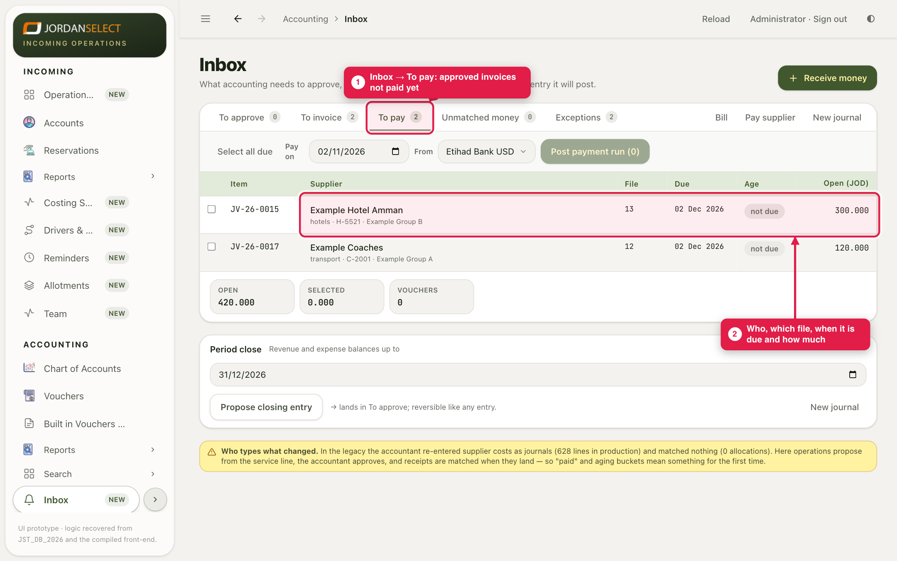
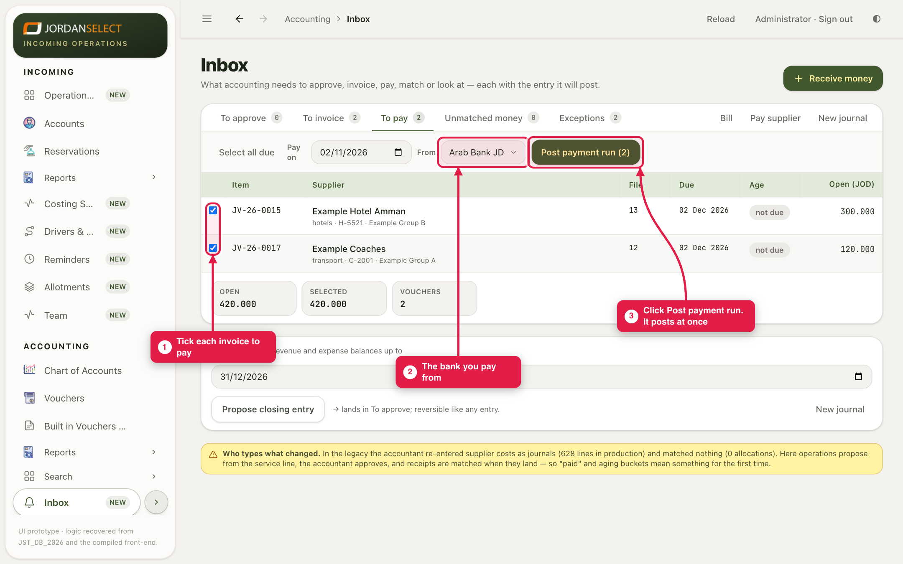
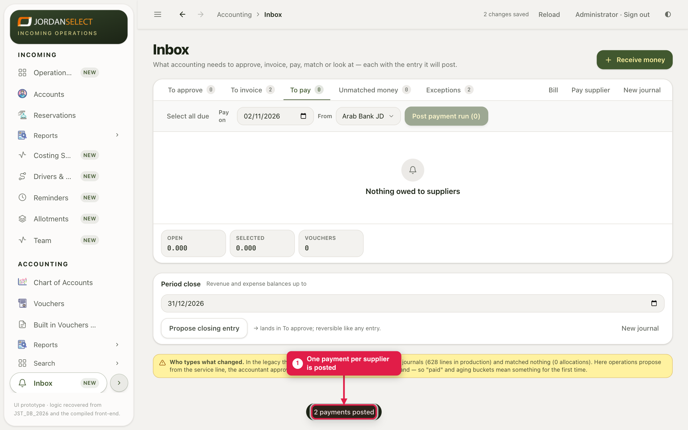

A payment run: tick the approved invoices you want to pay, choose the bank, and post them together.
WhoAccountants
WhereAccounting → Inbox → To pay
Takes2 to 5 minutes
You needTo know which invoices to pay today, and from which bank
1. See what is owed
1
Open Accounting → Inbox and click To pay. Every approved supplier invoice that is not paid yet is here, with the file, the due date, its age and the amount.

To pay. “not due” means the due date has not come yet.
2. Choose and post
2
Tick each invoice you want to pay. Select all due ticks every invoice that is past its due date. Check Pay on (the payment date) and choose the bank in From. Selected shows the total.
3
Click Post payment run. The number in brackets is how many invoices are ticked.

Two invoices ticked, 420.000 in all, paid from Arab Bank JD.
The run posts at onceThere is no “Are you sure?” box. Check the ticks, the date and the bank before you click.
4
The system confirms, for example “2 payments posted”. It posts one payment per supplier, matched to the invoices it pays, and they leave To pay.

Nothing left to pay.
Paying by cheque, or part of an invoice?A payment run has no cheque number and pays each invoice in full. For a cheque, or to pay only part, use Pay supplier (guide 05).
3. Check your work
The paid invoices are gone from To pay.
The bank’s balance on the Trial Balance has gone down by the total (guide 09).
A mistake? Open the payment in Vouchers → PAYMENT and fix it as in guide 01.
Questions? Ask the finance manager. · Last checked: ____ · Screens shown are from a test copy of the CRM with made-up data.